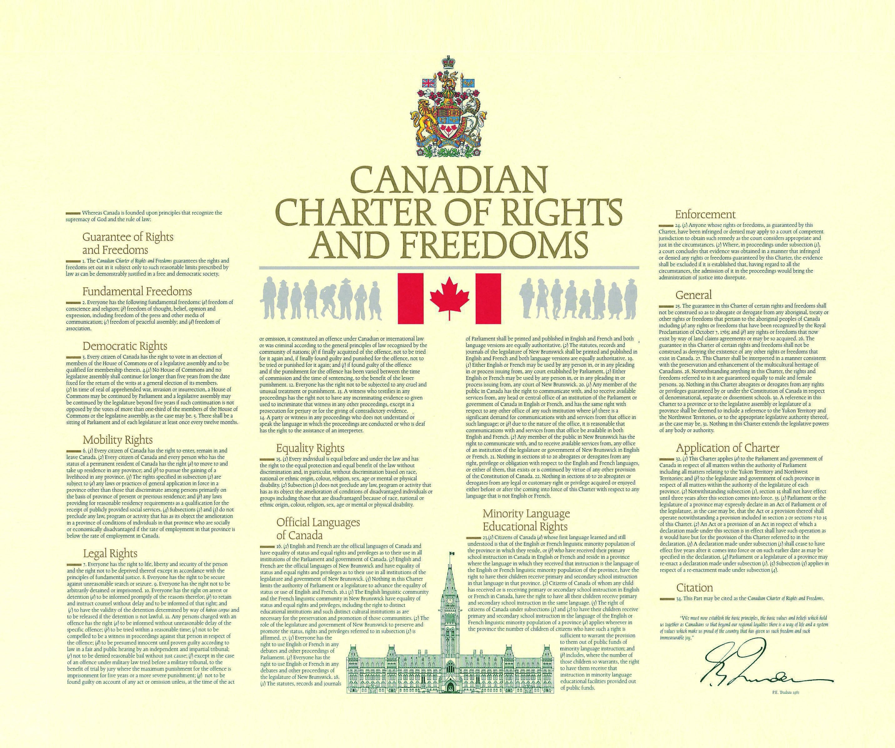
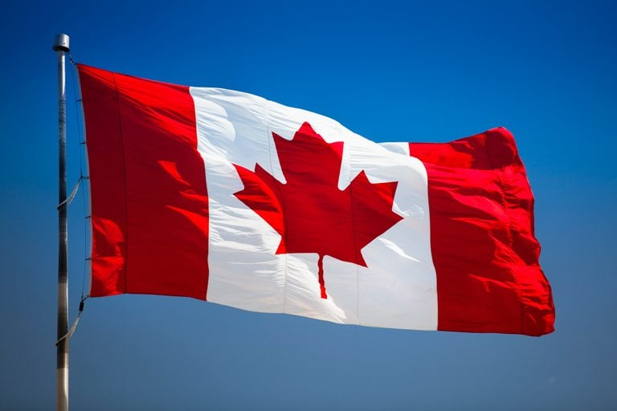
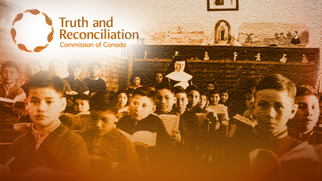

One of the most significant events during this period was the passage of the Constitution Act of 1982, which granted Canada full control over its own constitution and the ability to amend it without British parliamentary approval. This act gave Canada the power to make changes to its constitution without British interference, and allowed the country to establish its own identity separate from its former master. Another big event was the passing of the Charter of Rights and Freedoms in 1982, which brought the rights and freedoms of all Canadians in law and provided a legal framework for the protection of these rights. The Charter has made a great impact on Canadian society, particularly in the areas of Indigenous rights, equality and non-discrimination, and freedom of expression. These events were really impactful in the Canadian society as it marked our independence as well as brought rights using our newfound sovereignty over law. Finally, the Truth and Reconciliation Commission of Canada was established in 2008 to investigate and address the historical and ongoing injustices experienced by Indigenous peoples in Canada, and to facilitate reconciliation and harmony between Indigenous and non-Indigenous communities. These efforts have been instrumental in advancing the rights and well-being of Indigenous peoples in Canada, but there is still much work to be done in the areas of reconciliation and Indigenous self-governance.
Canada is the nation it is today because of a combination of factors including its geography, history, and political systems. Its geography has played a significant role in shaping its industries and population, while its history, including colonial rule, the struggle for independence, and the development of a multi-cultural and multi-ethnic society has helped to define its values and identity. Additionally, Canada’s political systems values democracy, including its federal system of government, and its Charter of Rights and Freedoms, having helped to shape its policies and priorities. Overall, the specialty of Canada as a nation can be attributed to its complex set of factors that have shaped its development and continue to today.

Reconciliation in Canada is about addressing and repairing the relations between indigenous and non indigenous people, previously ruined from the arrival of colonizers. It involves listening to and engaging with Indigenous leaders and communities, acknowledging and addressing past harms, and working towards a more just future. The goal of reconciliation is to create a more peaceful society for all Canadians, and to promote understanding, respect, and coexistence between Indigenous and non-Indigenous peoples. That is why reconciliation.
